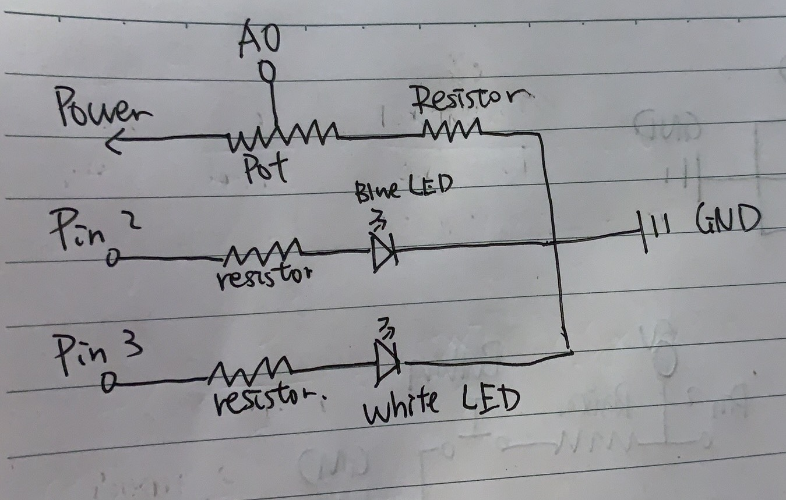

Assignment 3: Input Output
Schematic
The schematic demonstrates how I accomplish making two LEDs light in differenct environment. First, connect LEDs and photoresistor to a separate Pin on Arduino. Second, connect the photoresistor to 5V. Third, add resistors to the circuit to drop the voltage on LEDs and photoresistor to prevent LEDs and the photoresistor from breaking. Finally, Connect the LEDs and photoresistor back to GND on Arduino.
Circuit

In this assignment, I used blue LED and white LED with 220K resistors and a photoresistor with 10K resistor. The voltage drop of each LED is around 1.6 ohms. The current flows through the LED would be around (5V - 1.6V) / A x 220K ohms which is 0.015mA. This is in the desired current range. For the photoresistor, the reason why I use a 10K resistor is to make sure that the infinity current is not breaking anything. When there are strong light, the resistance of the photoresistor becomes close to zero. Hence, adding a resistor to the circuit would prevent it from breaking. Also, I read 500 to 1023 from the photoresistor.
Firmware
Circuit's operation

When users put light on the photoresistor, the white LED lights up with the value of how light the resource is. Otherwise, the blue LED is turned on with the value of the light resource.